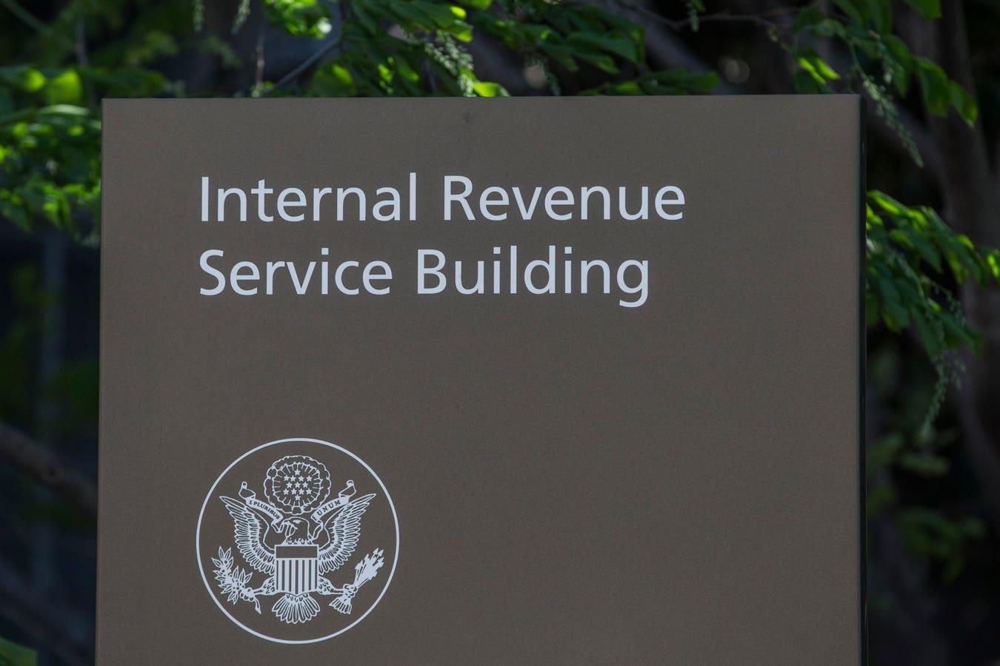

IRS Gives Taxpayers Impacted By The Terrorist Attacks In Israel More Time To FileThe IRS has announced tax relief for individuals and businesses affected by the terrorist attacks in the State of Israel. These taxpayers now have until Oct. 7, 2024, to file various federal returns, make tax payments, and perform other time-sensitive tax-related actions. Affected Taxpayers The relief is extended to any individual whose principal residence or business entity or sole proprietor whose principal place of business is in Israel, the West Bank, or Gaza, as well as any individual, business or sole proprietor, or estate or trust with books, records, or a tax preparer located in that area. Relief also applies to anyone killed, injured, or taken hostage due to the terrorist attacks, and any individual affiliated with a recognized government or philanthropic organization who is assisting in the covered area, such as a relief worker. Filing and Payment Relief The relief postpones tax filing and payment deadlines that have occurred or will occur during the period from Oct. 7, 2023, through Oct. 7, 2024. Affected individuals and businesses will have until Oct. 7, 2024, to file returns and pay any taxes that were originally due during this period. This relief includes individuals who had a valid extension to file their 2022 return due until Oct. 16, 2023. However, since tax payments for 2022 returns were due on April 18, 2023, those tax payments are not eligible for this relief. This means that affected individuals have more time to file (to Oct. 7, 2024), but not to pay. Similarly, calendar-year corporations with 2022 extensions that will run out on Oct. 16, 2023 have more time to file (to Oct. 7, 2024), but not to pay. Those taxpayers with 2023 individual and business returns and payments normally due on March 15 and April 15, 2024 have both more time to file and more time to pay (to Oct. 7, 2024). Quarterly estimated income tax payments normally due on Jan. 16, April 15, June 17 and Sept. 16, 2024, as well as quarterly payroll and excise tax returns normally due on Oct. 31, 2023, and Jan. 31, April 30 and July 31, 2024, are pushed off to Oct. 7, 2024. Calendar-year tax-exempt organizations with extensions for information returns that will run out on Nov. 15, 2023 now have until Oct. 7, 2024 to file. The filing any return of income tax, estate tax, gift tax, generation-skipping transfer tax, excise tax (other than firearms tax), harbor maintenance tax, or employment tax that were due on or after Oct. 7, 2023, and before Oct. 7, 2024, are postponed until Oct. 7, 2024. Filing deadlines for a petition with the Tax Court, a claim for credit or refund of any tax, and suit upon a claim for credit or refund of any tax are also extended. If those deadlines fall between Oct. 7, 2023, and Oct. 7, 2024, they are postponed until Oct. 7, 2024. Also noteworthy, the time to make retirement plan contributions and rollovers will be extended to Oct. 7, 2024. Payroll deposits get a smaller breather: the penalty for failure to make payroll and excise tax deposits due on or after Oct. 7, 2023 and before Nov. 6, 2023, will be abated as long as the deposits are made by Nov. 6, 2023. Government Actions The government will be taking a pause on actions that were to be scheduled between Oct. 7, 2023, and Oct. 7, 2024 for affected taxpayers. That includes assessing any tax, IRS collections activity (by levy or otherwise), and bringing suit to collect any tax liability—those actions are postponed until Oct. 7, 2024. How To Get Relief The IRS will identify taxpayers whose principal residence or principal place of business is located in the covered area based on previously filed returns. Those taxpayers automatically qualify for relief and do not need to contact the IRS. Other eligible taxpayers can obtain relief by calling the IRS disaster hotline at 1.866.562.5227 (international callers should call 267.941.1000). Additionally, if you meet the criteria for relief and receive a late filing or late payment penalty notice from the IRS, you should call the number on the notice to have the penalty abated. More Information For more information, check out Notice 2023-71. |
 |